Up/Down is an interactive song that requires your input to play. The music is created collaboratively between the composer and the listener and will be different every time you hear it.
Music
Interactive Music is a very different way of conceiving and producing music. Unlike a typical song which is fixed along a timeline, Up/Down does not have a timeline. It is a potentially endless song. Instruments, effects, tempo, chords and sections respond to the distance and direction of your scrolling.
The most immediate change based on the scroll position is the tempo of the song. At the top of the page the tempo is 130 bpm and 65 bpm at the bottom. Because different tempos have very different feels, the arrangement of the song also changes with the tempo. At the bottom of the page, the song has a laid-back triplet groove, and at the top of the page, the song is a driving four on the floor.
Similarly, the sounds of instruments and effects are interpolated based on the scrolling position. For example the kick drum has two preset points position at the top and the bottom of the page. As listeners scroll towards the bottom, the attack and decay slow down and the pitch lowers until it reaches the bottom preset. The technique is similar to defining tween anchors in animation.
The chord progression presented a different challenge. Unlike the preset interpolation used for the timbres of the synths and effects, chord progressions have a directionality to them and need to feel like they're always moving forward. The solution to this was using a
Markov Chain which descibes how chords can transition based on the current chord and the position of the scroll. Below is Up/Down's chord chart:

When a listener is resting at a specific scroll position (normalized as a value between 0-1) the chords will alternate on the two chords at that strata. When the user transitions to the next section, it will follow the flow of the graph.
Technology
Everything you hear is generated live. The only sample is the voice which is pre-recorded but triggered and effected in real-time. This is very different from an "interactive music video" which uses a fixed mp3 for the music and generates the visuals live. Up/Down is created entirely in the browser. The sounds are synthesized and the effects are applied in real-time. This is made possible with a recent browser technology called the
Web Audio API. Since it's still under active development, different browsers sound and perform differently from one another. Up/Down uses a library for arranging and generating music using the Web Audio API called
Tone.js.
Visuals
To go along with the scrolling interaction, the images in the center are meant to parody a social news feed. As the user scrolls up, the eyes and head turn to look up, and they look down as the user scrolls down.
The visuals follow the music closely and apply a few of the same techniques. Each instrument has a corresponding visual element which is triggered along with that instrument. The colors, sizes and animation speeds are interpolated in a similar way to the effects using preset interpolation.
The visuals were programmed using
three.js. The color blending was created with a simple custom shader to create unique color combinations where shapes overlap.
Interaction
We chose scrolling as the interface with the music because of how ingrained scrolling has become in all our digital interactions. Scrolling is usually the first thing you do on a website, and for many websites, it is the only thing you do. The idea was to apply this sedate interaction towards something more expressive and active.
We spend so much of our time passively sliding through feeds of information. To quantify this, we have created a separate but related project called
Scroll-O-Meter which is a sort Fitbit for your online life, measuring how many miles you've scrolled.